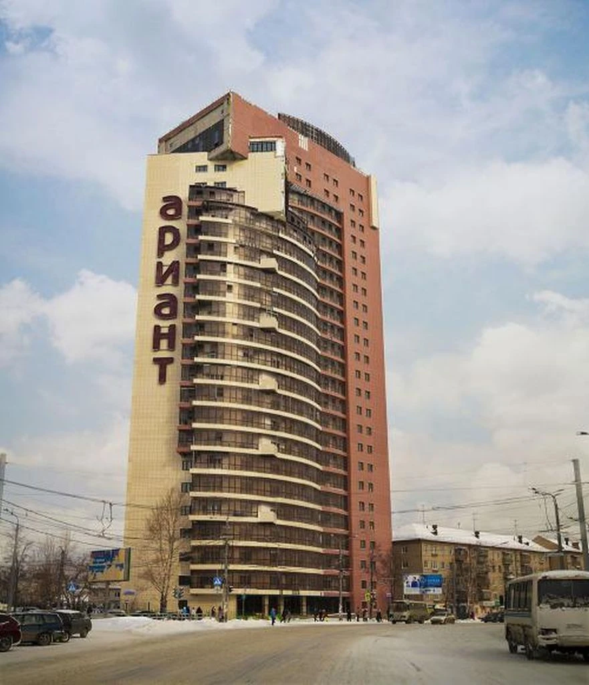
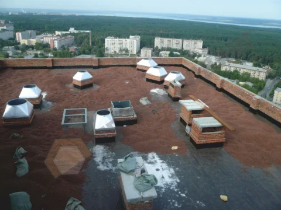
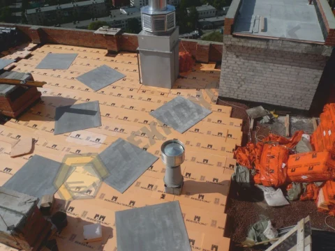
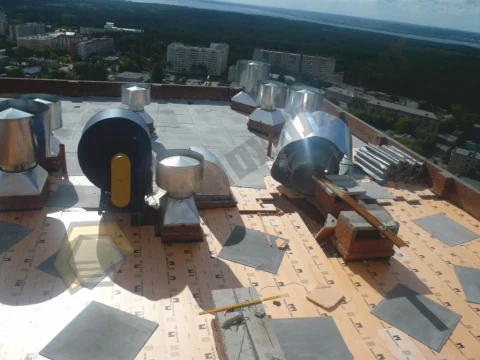
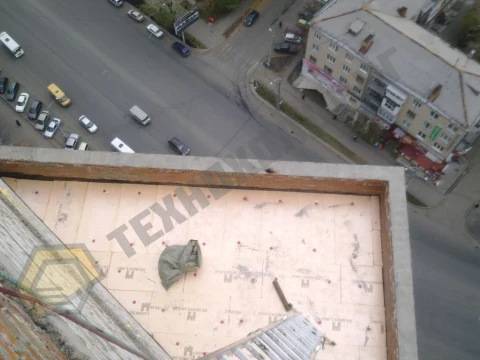
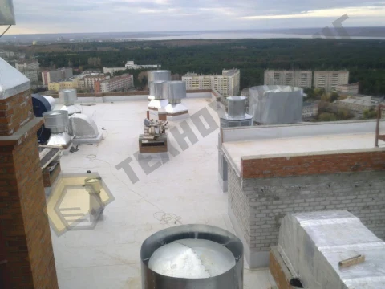
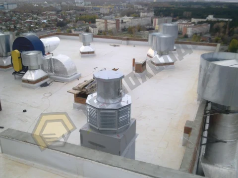
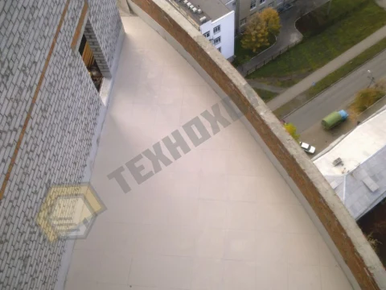
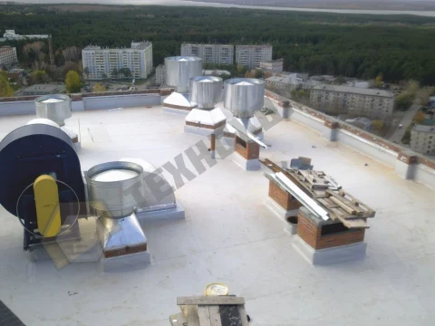
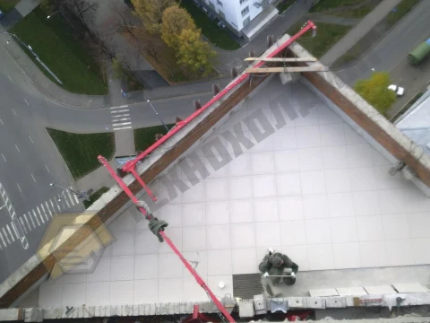

Жилой дом Ариант на пересечении ул. Воровского и Варненской
ПВХ-мембрана по железобетонному основанию
Жилой комплекс «Ариант» представляет собой 25-этажную новостройку Элит-класса в г. Челябинск. Здание построено по последнему слову градостроительных технологий. Проектировщики и строители жилого комплекса объединили современные конструкторские решения для возведения уникальной в Челябинске новостройки с элитными квартирами, которые способны превзойти даже самые смелые Ваши ожидания. Компания ООО «ТехноХолдинг» выполнила на объекте работы по устройству кровли. Работы производились в условиях: стесненности строительной площадки, большой высотностью (до 90м) и отсутствия крана. Несмотря на сложные условия, большой опыт и профессионализм сотрудников позволили ООО «ТехноХолдинг» выполнить работы на высоком уровне качества и в утвержденные сроки. В ходе работ были выполнены: Работы по устройству кровли с применением ПВХ мембраны с механическим креплением с сборную стяжку из АЦП в слоя. Устройство эксплуатируемой кровли на террасах верхних этажей с финишным покрытием керамической плиткой.
- Площадь работ
- 1 200 м²
- Дата сдачи
- 2011
- Заказчик
- ОАО Ариант
- Расположение
- Челябинск
- Тип объекта
- Жилые
- Сроки работ
- Не указан
Решения и материалы
- Площадь
- 1200 м. кв.
- Пароизоляция
- Биполь ЭПП
- Разуклонка
- Керамзитовый гравий
- Основания
- Сборная стяжка из АЦП 20мм
- Разделительный слой
- Геотексиль 200 Г/м2
- Гидроизоляция
- мембрана Пластфоил F 1,2мм

-

-

-

-

-

-

-

-

-



Фото 1 из 10